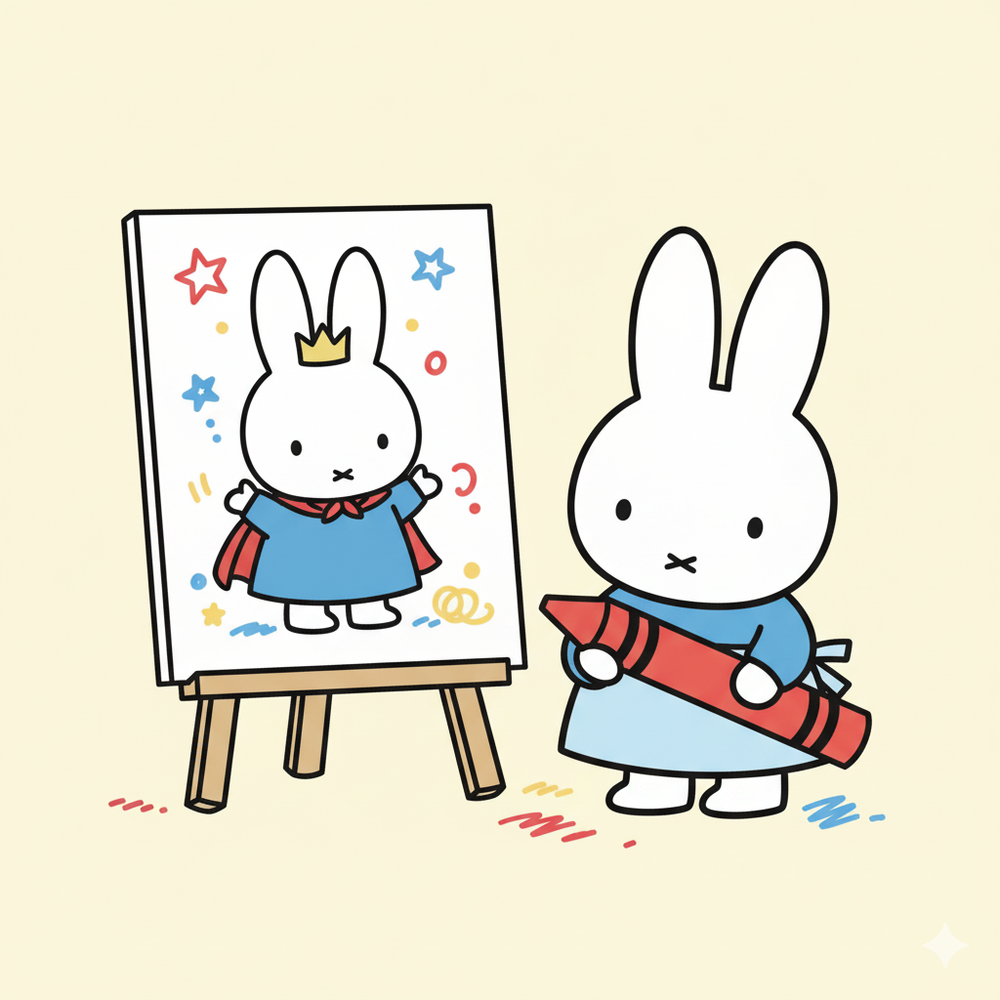
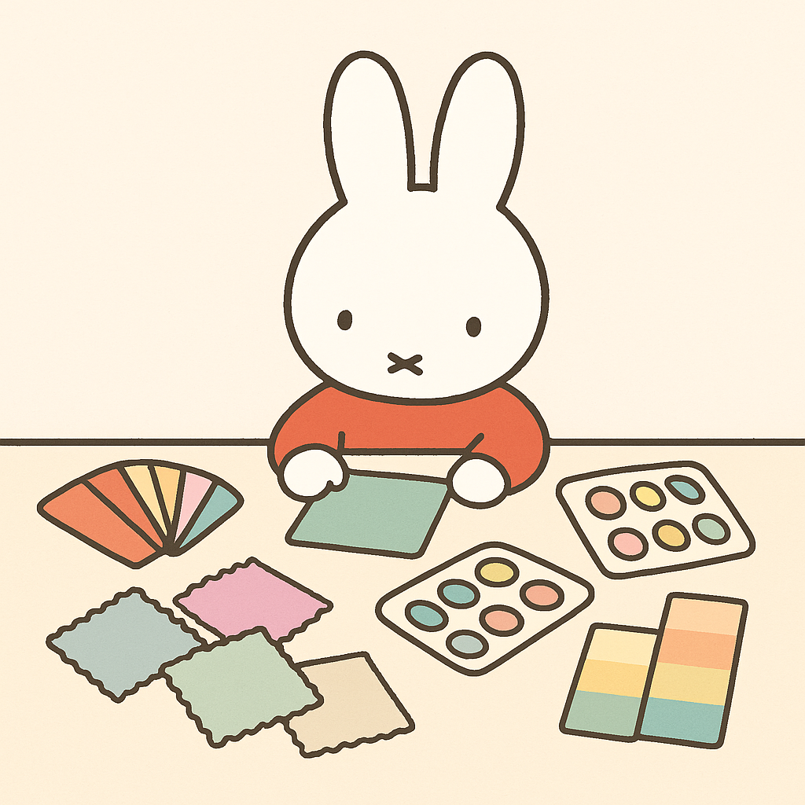
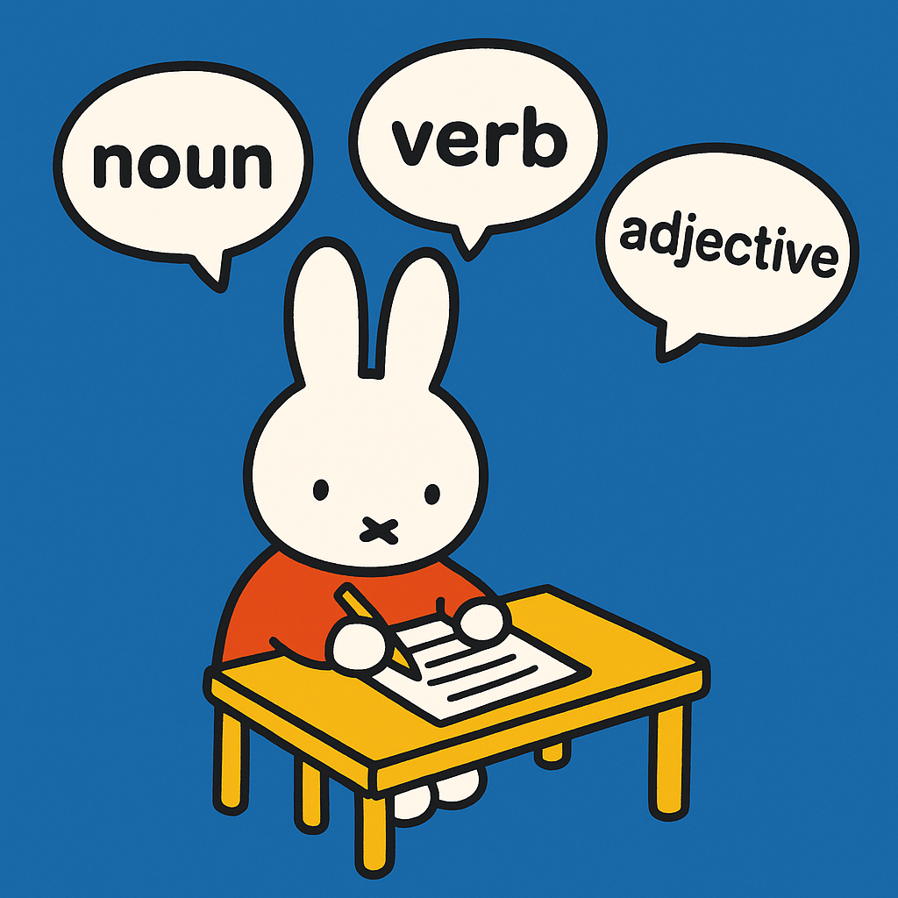
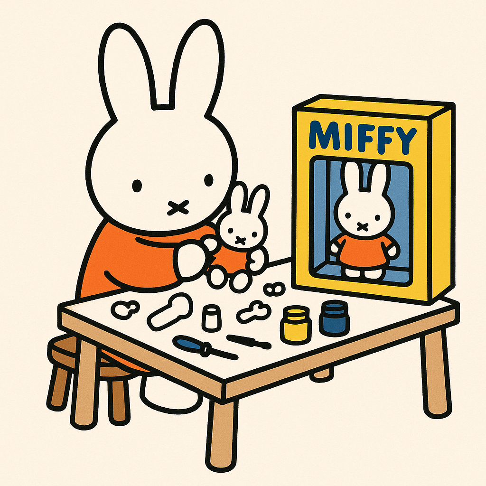

Inspired by one of the previous student’s snoopy themed blog posts, I was brainstorming a character I liked that I could use as a blog post mascot. I wanted to include this mascot, in some format relevant to the content, in every thumbnail image of my blog posts. As a big lover of the character Miffy, created by Dutch artist Dick Bruna, I decided to select her as my LLM blog mascot.
This then leads to the task of generating thumbnail images with the use of my choice of image-generating LLM, gpt-5. I first used gpt-5 to generate an image prompt, revised it, and generated an image. I gave the following general prompt to generate an image prompt:
Please write me an image prompt that would be generate an image including two elements:
the dutch character miffy
anything relating to [blog post content]
1. Personal Color Analysis
Starting with my first blog post, I asked gpt-5 for a prompt that would generate an image appropriate for a blog post about personal color analysis. It gave the following output:
A cute illustration of the Dutch character Miffy sitting at a table surrounded by colorful fashion swatches, paint palettes, and fabric samples. Miffy is curiously comparing colors, as if doing a personal color analysis. The scene feels light, minimalist, and playful, with soft pastel tones and clean lines, staying true to Miffy’s simple, charming style.
I then modified this prompt and generated the following image:
Please generate a cute illustration of the Dutch character Miffy sitting at a table surrounded by colorful fashion swatches, paint palettes, and fabric samples. Miffy is curiously comparing colors, as if doing a personal color analysis. The scene feels light, minimalist, and playful, with soft pastel tones and clean lines, staying true to Miffy’s simple, charming style. This image should be appropriate for a blog post thumbnail and should be a square in size.

2. Healthcare Diagnosis
My next blog post was about using an LLM to diagnose my symptoms, and when I used gpt-5 to generate a prompt, it gave me the following:
A minimalist, cute illustration of the Dutch character Miffy dressed as a doctor, wearing a white coat and holding a stethoscope. Next to her is a medical chart with simple drawings. The style is clean, playful, and child-friendly, with soft pastel colors and bold outlines that stay true to Miffy’s original design.
I then revised it as:
Please generate a minimalist, cute illustration of the Dutch character Miffy dressed as a doctor, wearing a white coat and holding a stethoscope. Next to her is a medical chart with simple drawings. The style is clean, playful, and child-friendly, with soft pastel colors and bold outlines that stay true to Miffy’s original design. This image should be appropriate for a blog post thumbnail and should be a square in size.

3. Madlibs
Then, I generated a prompt regarding my blog post about Madlibs:
A playful, minimalist illustration of the Dutch character Miffy sitting at a small desk with a pencil, happily filling out a Mad Libs–style word game. Around Miffy float large, simple word bubbles with fun parts of speech like ‘noun,’ ‘verb,’ and ‘adjective.’ The style is clean and charming, with bold outlines and bright, primary colors, staying true to Miffy’s original design.
I revised it as:
Please generate a playful, minimalist illustration of the Dutch character Miffy sitting at a small desk with a pencil, happily filling out a Mad Libs–style word game. Around Miffy float large, simple word bubbles with fun parts of speech like ‘noun,’ ‘verb,’ and ‘adjective.’ The style is clean and charming, with bold outlines and bright, primary colors, staying true to Miffy’s original design. This image should be appropriate for a blog post thumbnail and should be a square in size.
This generated the image:

4. Action Figure Generation
Gpt-5 generated the following prompt:
A whimsical, minimalist illustration of the Dutch character Miffy sitting at a small workbench, carefully assembling her own Miffy action figure. On the table are tiny toy parts, paint jars, and simple tools, all drawn in a clean, childlike style. Next to her is a finished toy box with the completed Miffy action figure inside, featuring bright, simple packaging. The overall look is playful, charming, and true to Miffy’s original bold-lined design.
Then, it was revised as:
Please generate a whimsical, minimalist illustration of the Dutch character Miffy sitting at a small workbench, carefully assembling her own Miffy action figure. On the table are tiny toy parts, paint jars, and simple tools, all drawn in a clean, childlike style. Next to her is a finished toy box with the completed Miffy action figure inside, featuring bright, simple packaging. The overall look is playful, charming, and true to Miffy’s original bold-lined design. This image should be appropriate for a blog post thumbnail and should be a square in size.

Reflection
I believe these four images were generated successfully! The artistic ability of LLMs to put together images based on just a few descriptive sentences is pretty remarkable. It was also efficient and intruiging to see how gpt-5 would generate its own image prompt to fuel its own image creation. Perhaps due to the strong branding of Miffy online and the help of using gpt-5 to create the prompts, the style of image generation has been generally consistent with the exception of a few stylistic differences (black versus brown lineart, the color of Miffy’s shirt, etc). This process really showcases how AI can bridge imagination and execution in a playful, accessible way.
In the next set of thumbnail image creations, I would like to compare the generations of other models. I’ve only ever used the ChatGPT models to generate images, so I’d like to branch out and experiment with other model to determine what would be most appropriate for my blog images. I also would like to generate the thumbnail image for this blog post by comparing other models!